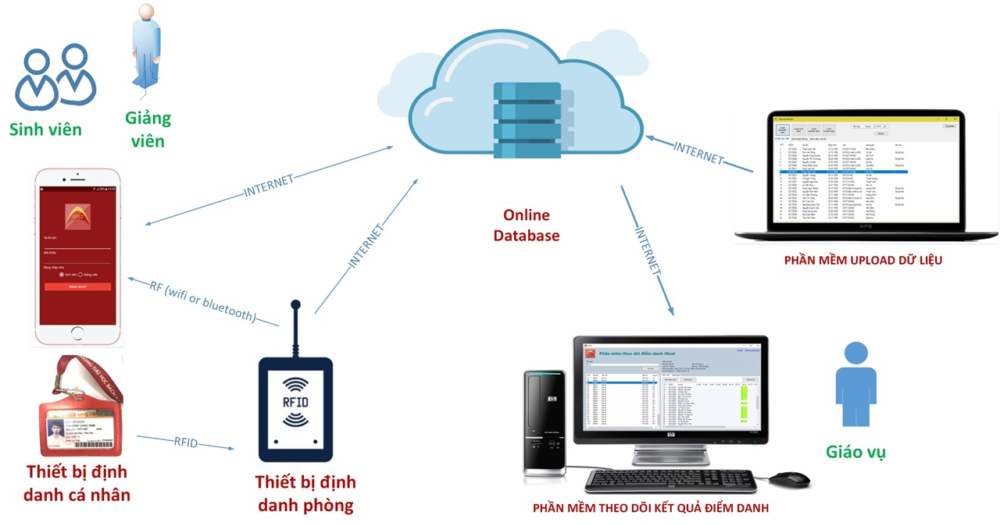
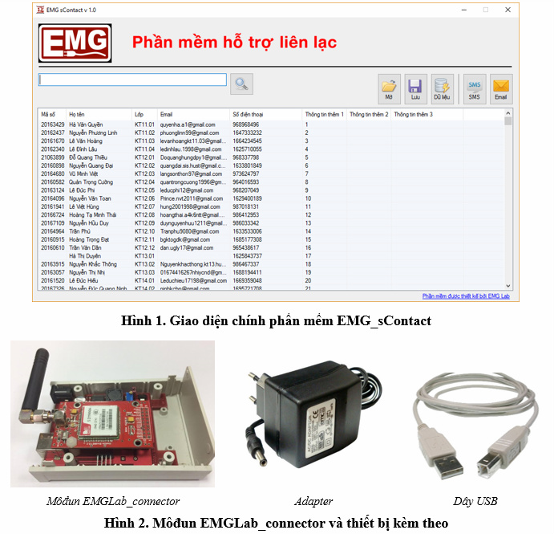
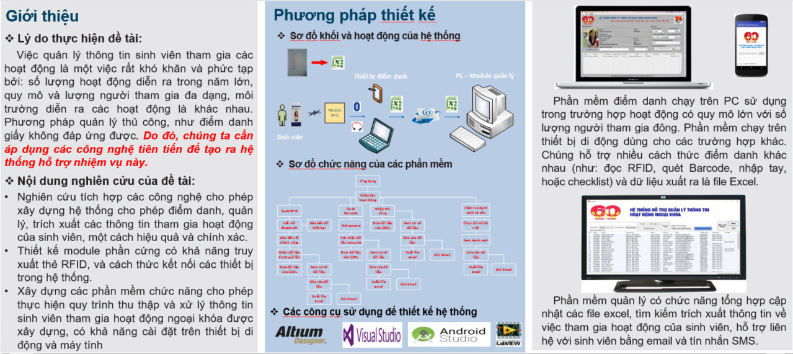
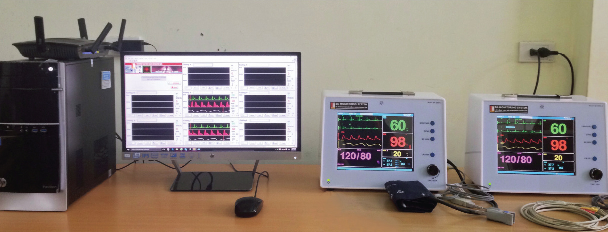
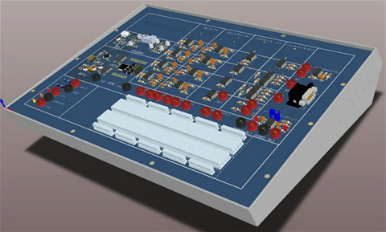
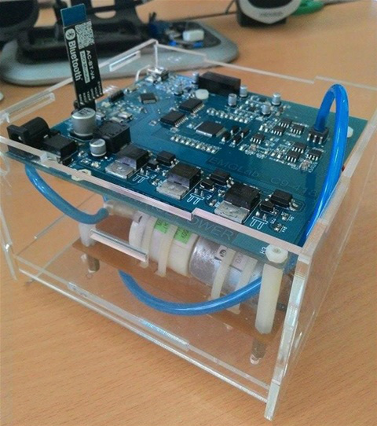
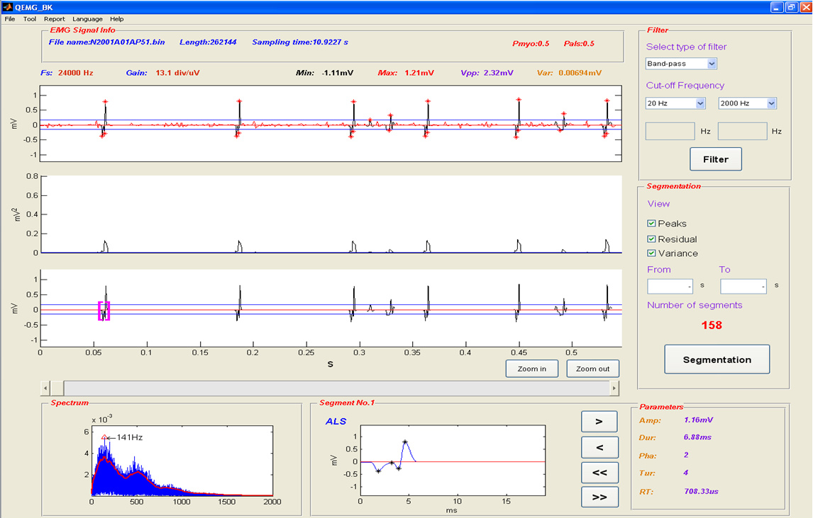
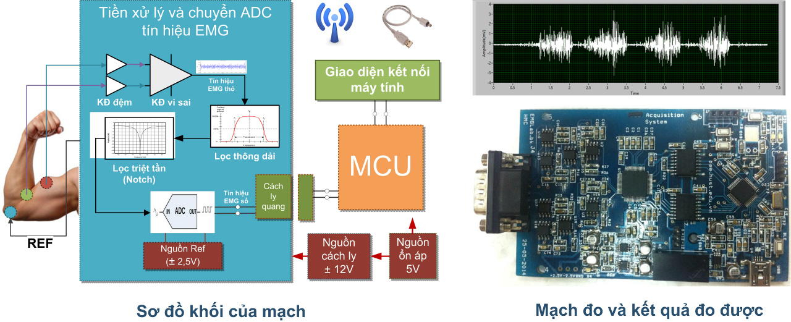
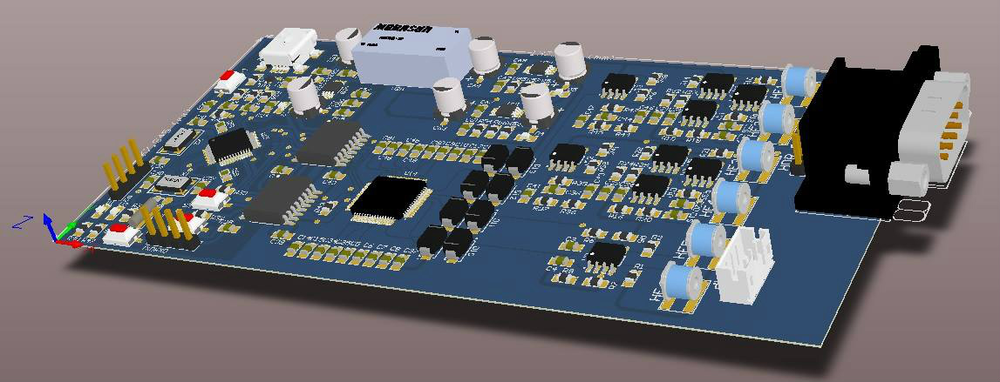

Hệ thống giảng đường 4.0
Hệ thống Giảng đường 4.0 phiên bản 1 có tên gọi là BKsCheck v1, Hệ thống này bao gồm nhiều thành phần khác nhau (như mô tả ở hình). Trong số các thành phần của Hệ thống BKsCheck v1, đang phát triển và được ứng dụng tại Đại học Bách Khoa Hà Nội, có ứng dụng chạy trên điện thoại di động có tên iHust.
Hiện nay, iHust là ứng dụng hỗ trợ đào tạo dùng cho sinh viên và giảng viên đang hỗ trợ cài đặt trên các điện thoại di động chạy hệ điều hành Android và iOS. Để được hướng dẫn sử dụng chi tiết hơn các bạn có thể vào Fanpage iHUST.
Nếu bạn muốn phối hợp phát triển các sản phẩm tương tự hãy liên hệ với chúng tôi.

Robot bê phở - PHỞ RESTECH
Phở 4.0 là giải pháp áp dụng điều khiển tự động hóa để nâng cao hiệu quả phục vụ cho nhà hàng, giúp giải quyết các vấn đề như: Giảm số người phục vụ, khắc phục sự hạn chế do diện tích nhà hàng hẹp, giảm thời gian đáp ứng các yêu cầu của khách hàng, tạo ra sự mới lạ trong việc phục vụ thực khách,...
EMGlabvn chúng tôi là nhóm đã nghiên cứu, cung cấp giải pháp công nghệ và dịch vụ công nghệ về robot, điều khiển và phát triển ứng dụng cho ý tưởng nhà hàng Phở 4.0 của Đối tác tại Yên Bái. Chúng tôi đang tiếp tục thực hiện nâng cấp Robot và các thành phần liên quan theo yêu cầu của đối tác để nhân rộng mô hình nhà hàng trên cả nước.
Công cụ hỗ trợ liên lạc EMGLabvn Connector

Có bao giờ bạn gặp phải vấn đề?
- Bạn có một hoặc nhiều file excel có chứa thông tin liên lạc như Số điện thoại hoặc địa chỉ Email của một nhóm, như danh sách lớp, khách mời, khách hàng… Các danh sách liên lạc không thống nhất.
- Bạn cần gửi thông báo bằng Email hoặc tin nhắn SMS tới từng người trong danh sách đó với các yêu cầu khác nhau.
- Bạn không muốn mất quá nhiều thời gian để làm việc đó...
Hãy sử dụng Bộ công cụ hỗ trợ liên lạc EMG sContact của chúng tôi.
Sản phẩm của chúng tôi đang được dùng bởi Phòng CTCT & CTSV, Văn phòng Đoàn Thanh niên trường Đại học Bách Khoa Hà Nội.
- Phần mềm EMG_sContact có chức năng chính là quản lý thông tin liên lạc, đồng thời hỗ trợ gửi Email và tin nhắn SMS tới từng địa chỉ email hoặc số điện thoại theo danh sách do người dùng lựa chọn.
- Phần cứng là Môđun EMGLab_connector hỗ trợ gửi tin nhắn khi được kết nối với máy tính chạy phần mềm EMGLab_connector.
Ưu điểm của bộ công cụ này là phần mềm EMG_sContact có thể hoạt động mà không cần kết nối với môđun EMGLab_connector, tuy nhiên khi đó nó chỉ hỗ trợ gửi email. Công cụ này rất hữu dụng khi kết hợp với các tính năng được cung cấp bởi Google drive như Gmail, Google form, Google sheet… Công cụ này đặc biệt thích hợp với các danh sách liên lạc được tạo bởi ứng dụng Google form, Google sheet.
Giá thành trọn bộ công cụ (Phần cứng + Phần mềm Full tính năng) là 1,500,000 VNĐ.
- Sản phẩm dùng thử tải tại đây
- Mô tả chức năng và hướng dẫn sử dụng sản phẩm tải tại đây
Hệ thống hỗ trợ quản lý thông tin sinh viên tham gia hoạt động Đoàn - Hội (phiên bản 1)

Đề tài là kết quả của việc tích hợp có chọn lọc các công nghệ RFID, Bluetooth, lập trình Android, C#, LabVIEW trong việc xây dựng một hệ thống đa chức năng, có khả năng tùy biến cao, giúp hỗ trợ hiệu quả cho việc quản lý thông tin tham gia hoạt động ngoại khóa của sinh viên. Trong nghiên cứu này, công nghệ RFID được sử dụng để thiết kế và cho ra đời một hệ thống gồm phần cứng là mạch nhận dạng thẻ, tích hợp truyền thông UART, có khả năng truyền thông tin lên PC hoặc thiết bị di động. Phần mềm bao gồm bộ công cụ 3 phần mềm, chạy trên thiết bị di động và PC, cho phép phù hợp với các hoạt động có đặc điểm khác nhau. Cụ thể là:
- Mỗi sinh viên được trang bị một thẻ cá nhân, thông tin sinh viên được lưu trữ trên thẻ RFID này, bởi vậy chỉ cần quẹt thẻ là mọi thông tin trong thẻ sẽ được truyền lên các phần mềm.
- Lịch sử điểm danh với từng hoạt động sẽ được lưu lại dưới dạng file Excel. Các phần mềm đều có chức năng gửi Email giúp việc gửi file điểm danh hoạt động trở nên dễ dàng.
- Bộ công cụ còn xây dựng một phần mềm chạy trên máy tính, có chức năng tổng hợp các File Excel, tìm kiếm và xuất ra danh sách hoạt động đã tham gia, giúp cho việc đánh giá sinh viên được chính xác, nhanh chóng.
Các công nghệ sử dụng:
- Phần cứng: STM32F103C8T6 được sử dụng là phần tử có hỗ trợ truyền thông UART, SPI, USB...; được lập trình để nhận dữ liệu từ thẻ RFID để truyền lên các phần mềm trên PC hoặc thiết bị di động.
- Phần mềm trên thiết bị di dộng: Cho phép hỗ trợ điểm danh theo bốn cách: quẹt thẻ RFID, quét Barcode, nhập thủ công và điểm danh bằng danh sách có sẵn. Phần mềm được lập trình sử dụng công cụ Android Studio.
- Phần mềm trên PC (xây dựng bằng LabVIEW): Phần mềm xây dựng bằng LabVIEW có các chức năng tương tự phần mềm chạy trên thiết bị di động. Tuy nhiên không hỗ trợ quét mã Barcode, và giao thức truyền thông với phần cứng là UART. Với khả năng lưu trữ dữ liệu lớn hơn điện thoại rất nhiều, phần mềm này còn có chức năng hiển thị ảnh của sinh viên hiện thời đang điểm danh. Với hai phần mềm đều có chức năng điểm danh sinh viên tham gia hoạt động thì cần thiết có một phần mềm làm chức năng tổng hợp các đầu ra của chúng, cụ thể ở đây là file Excel.
- Phần mềm trên PC (xây dựng bằng C#): Phần mềm thứ ba còn lại của bộ công cụ xây dựng bằng C#, các chức năng tìm kiếm tổng hợp được thực thi ở đây. Ngoài ra chức năng ghi thông tin thẻ RFID cũng được tích hợp vào phần mềm này. Đối với hệ thống, thẻ RFID là một bộ phận không thể thiếu. Thông tin hiển thị trên thẻ cũng chỉ được một phần, với ưu điểm có khả năng lưu trữ dữ liệu lớn và ghi xóa nhiều lần, chức năng ghi thông tin thẻ là bắt buộc phải xây dựng. Để làm được điều này phần mềm phải thực hiện kết nối với phần cứng. Người quản lý dùng chức năng tìm kiếm để tìm thông tin chính xác trong danh sách sinh viên Excel có sẵn, chọn thiết bị phần cứng thực hiện kết nối và ghi thẻ. Thao tác này đáp ứng khá nhanh, trung bình khoảng 1s/thẻ.
Hệ thống Monitor trung tâm

Hệ thống monitor trung tâm có cấu hình cơ bản bao gồm 8 máy trạm (Bedside Monitor) và một máy theo dõi và điều khiển trung tâm đặt tại phòng y tá trực, hệ thống có thể mở rộng với số lượng máy trạm nhiều hơn. Trong đó:
- Các thiết bị trong hệ thống được kết nối không dây (kiểu Wifi).
- Các thiết bị theo dõi tại gường (Bedside Monitor) cho phép đo được 6 thông số (tín hiệu ECG, SPO2, NIBP, RESP, T, HR),
- Thiết bị và hệ thống giao diện thân thiện, dễ sử dụng, báo hiệu bằng âm thanh và ánh sáng tại các thiết bị đặt tại giường hoặc tại trung tâm.
- Phần mềm trung tâm cho phép hiển thị thông số, điều khiển, lưu trữ và tạo báo cáo.
- Hệ thống có giá thành cạnh tranh so với các sản phẩm tương tự của nước ngoài.
Panel thí nghiệm BK-BME.Lab5

Panel thí nghiệm BK.BME-Lab5 là Panel mạch bao gồm các mạch xử lý tín hiệu y sinh cơ bản và phần mềm thu nhận và xử lý tín hiệu trên chạy máy tình, cụ thể:
- Bộ thí nghiệm BK-BME.Lab5 là bộ mạch đo tín hiệu điện tim thông qua việc khảo sát các mạch thu nhận và xử lý tín hiệu điện tim, gồm: Các mạch xử lý đầu vào; Chuyển mạch theo các đạo trình cơ bản, Mạch cách ly, Mạch biến đổi tương tự số; Mạch ghép nối máy tính, Xử lý số đối với một số loại nhiễu; Phần mềm phân tích và hiển thị trên máy tính; Module mô phỏng tín hiệu điện tim và nhiễu.
- Bộ thí nghiệm gồm các module sau: (1) Mạch lọc Notch, (2) Mạch lọc thông dải, (3) Mạch khuếch đại vi sai, (4) Mạch khuếch đại đệm, (5) Mạch nguồn cách ly, (6) Phần mềm xử lý tín hiệu và hiển thị trên máy tính.
- Bộ thí nghiệm dùng cho các mục đích sau: (1) Khảo sát các mạch đo tín hiệu điện tim có sẵn trên mặt Panel, (2) Lắp ráp một số mạch chính trên bo trắng và khảo sát, đánh giá, nhận xét, (3) Thu nhận và hiển thị tín hiệu điện tim trên máy tính.
Panel thí nghiệm này còn bao gồm kèm theo tài liệu hướng dẫn thực hiện quy trình của các bài thí nghiệm với mục tiêu cụ thể.
Sản phẩm đã được thương mại, nếu quan tâm bạn có thể liên hệ với chúng tôi để biết thêm thông tin chi tiết hơn.
Panel thí nghiệm BK-BME.Lab3
Panel thí nghiệm BK-BME.Lab3 là Panel mạch bao gồm các mạch xử lý tín hiệu y sinh thông dụng, cụ thể:
- Bộ thí nghiệm BK-BME.Lab3 là bộ mạch gồm mạch dịch mức, mạch phát hiện điện áp đỉnh xung, mạch bảo vệ đầu vào, mạch phát hiện tuột điện cực, mạch lấy giá trị tuyệt đối thường được ứng dụng trong các thiết bị y tế như thiết bị đo tín hiệu điện tim, điện não, điện cơ, thiết bị theo dõi bệnh nhân, đo cung lượng tim...
- Bộ thí nghiệm gồm các module sau: (1) Mạch dịch mức, (2) Mạch phát hiện điện áp đỉnh xung, (3) Mạch bảo vệ đầu vào, (4) Mạch phát hiện tuột điện cực, (5) Mạch lấy giá trị tuyệt đối.
- Bộ thí nghiệm dùng cho các mục đích sau: (1) Khảo sát các mạch dịch mức, phát hiện điện áp đỉnh xung, bảo vệ đầu vào, phát hiện tuột điện cực, lấy giá trị tuyệt đối có sẵn trên mặt Panel, (2) Lắp ráp các mạch dịch mức, phát hiện điện áp đỉnh xung, bảo vệ đầu vào, phát hiện tuột điện cực, lấy giá trị tuyệt đối trên bo trắng và khảo sát, đánh giá, nhận xét.
Panel thí nghiệm này còn bao gồm kèm theo tài liệu hướng dẫn thực hiện quy trình của các bài thí nghiệm với mục tiêu cụ thể.
Sản phẩm đã được thương mại, nếu quan tâm bạn có thể liên hệ với chúng tôi để biết thêm thông tin chi tiết hơn.
Môđun đo huyết áp dùng cho nghiên cứu

Huyết áp được biết tới là một trong các thông số cơ bản của cơ thể sống. Môđun này sẽ đo huyết áp bằng phương pháp không xâm lấn NIBP (Non-Invasive Blood Pressure). Mạch đo cho phép thu nhận và chuyển đổi ADC tín hiệu cảm biến áp suất đo áp suất vòng bít. Tín hiệu thu nhận được sẽ được gửi lên máy tính, được hiển thị và xử lý bởi các phần mềm được thiết kế tùy theo mục đích nghiên cứu. Ngoài ra, mạch đo còn có các khả năng như:
- Mạch có thể thiết kế theo hướng để thực hiện chức năng đo huyết áp từ xa thông qua khả năng truyền thông lên máy tính nhờ module Bluetooth HM10.
- Mạch đo có thể tích hợp hiệu quả vào các hệ thống thu nhận và xử lý tín hiệu hay phát triển thành các thiết bị theo dõi bệnh nhân đa thông số.
Sản phẩm đã được thương mại, nếu quan tâm bạn có thể liên hệ với chúng tôi để biết thêm thông tin chi tiết hơn.
Công cụ định lượng tín hiệu điện cơ đồ kim hỗ trợ chẩn đoán và nghiên cứu bệnh lý

Công cụ định lượng tín hiệu điện cơ kim đồ (QEMG_BK) hỗ trợ cho chẩn đoán và nghiên cứu. Công cụ QEMG_BK có các chức năng chính như: (1) Xử lý được nhiều các loại tệp dữ liệu iEMG từ nhiều nguồn khác nhau; (2) Quá trình tiền xử lý tín hiệu iEMG có thể được tùy chỉnh; (3) Quá trình phân tách các MUAP, xác định các tham số chính của các MUAP, phân nhóm các MUAP theo đặc điểm bệnh lý và tính các thông số của iEMG được thực hiện tự động/bán tự động dựa trên các thông số được thiết lập mặc định hoặc tùy chỉnh; (4) Kết quả định lượng tạo ra có thể được thể hiện ở nhiều dạng khác nhau như: dạng đồ thị, dạng số, dạng ký tự, dạng âm thanh và tệp tin số liệu. Nó có giao diện người dùng không khó để học cách sử dụng. QEMG_BK.exe được tạo ra trong nghiên cứu này có thể cài đặt và chạy trên các PC có cấu hình phổ biến hiện nay (như: 2 Duo CPU @ 2,93GHz, RAM 2GB, hệ điều hành Windows XP hoặc cao hơn), có cài/không cài đặt Matlab. Công cụ QEMG_BK có nhiều ưu điểm khi sử dụng để định lượng các loại dữ liệu tín hiệu iEMG.
Sản phẩm có thể được cấp miễn phí phiên bản dùng thử, hoặc tùy biến theo yêu cầu thương mại, nếu quan tâm bạn có thể liên hệ với chúng tôi để biết thêm thông tin chi tiết hơn.
Mạch đo tín hiệu điện cơ bề mặt (sEMG)

Điện cơ đồ (Electromyography – EMG) là phương pháp thu lại hoạt động điện của tổ chức cơ (nhóm bó cơ hoặc bắp cơ) khi nó hoạt động, tín hiệu thu được này được gọi tắt là tín hiệu EMG. Tín hiệu EMG chứa các thông tin phản ánh tình trạng và mức độ hoạt động của tổ chức cơ đó. Các thông tin thu được từ quá trình xử lý và phân tích tín hiệu EMG được sử dụng trong nhiều lĩnh vực khác nhau như: (1) hỗ trợ chẩn đoán bệnh lý và đánh giá tình trạng của tổ chức cơ, (2) là căn cứ để điều chỉnh phương pháp vận động giúp cải thiện hiệu quả lao động và luyện tập thể thao, và (3) ứng dụng trong điều khiển học.
Mạch đo hiệu sEMG có một số ưu điểm sau đây:
- Mạch đo có trở kháng đầu vào lớn, giúp làm giảm ảnh hưởng của sự sai lệch của trở kháng đường dây lên tín hiệu lấy vi sai. Nhờ đó, tín hiệu vi sai chỉ là tín hiệu chênh lệch điện áp tại các điện cực đo.
- Mạch đo có hệ số CMRR với nhiễu 50 Hz lên đến hơn 140 dB. Do đó giảm được đáng kể sự tác động của nguồn điện lưới lên tín hiệu, giúp làm giảm yêu cầu chống nhiễu đối với môi trường đo thực tế.
- Mạch đo sử dụng bộ chuyển đổi ADC có khả năng chuyển đổi tương tự - số tín hiệu có cực tính và có bộ khuếch đại nội có hệ số khuếch đại thiết lập mềm, nên không cần sử dụng mạch dịch mức và mạch khuếch đại rời rạc bên ngoài. Do đó, tín hiệu sẽ không bị sai lệch và méo dạng khi chuyển đổi ADC, mạch chạy ổn định nhỏ gọn, độ tin cậy cao.
- Mạch đo không gây sai lệch tín hiệu khi thực hiện truyền cách ly tín hiệu. Bởi vì, tín hiệu tương tự được số hóa trước khi truyền qua bộ cách ly quang. Đồng thời, chi phí cho nguồn cách ly mức độ cao (1 KVDC) nhưng có công suất nhỏ (< 1 W) thấp.
- Mạch đo có khả năng truyền thông với máy tính thông qua chuẩn USB với tốc độ Full Speed USB. Ngoài ra, mạch đo đã được thử nghiệm giao tiếp với máy tính thông qua chuẩn Bluetooth 4.0 cho kết quả tương tự khi tần số lấy mẫu tín hiệu nhỏ hơn 3 kHz.
Ngoài các ưu điểm được để cập ở trên mạch này còn có các ưu điểm khác do sử dụng các linh kiện có mức độ tích hợp cao và chất lượng, như: kích thước nhỏ, cho phép tăng số lượng kênh đo, công suất tiêu thụ thấp, độ tin cậy, và ổn định cao.
Sản phẩm đã được thương mại, nếu quan tâm bạn có thể liên hệ với chúng tôi để biết thêm thông tin chi tiết hơn.
Mạch đo tín hiệu điện tim ECG 4 kênh

Mạch đo hiệu ECG 4 Kênh có một số đặc điểm như sau:
- Mạch đo có trở kháng đầu vào lớn 10Mohm, giúp làm giảm ảnh hưởng của sự sai lệch của trở kháng đường dây lên tín hiệu lấy vi sai.
- Mạch đo có dải thông của mạch là 0.05Hz đến 250kHz. Mạch có mạch triển tần với hệ số CMRR với nhiễu 50 Hz lên đến hơn 140 dB.
- Mạch đo sử dụng bộ chuyển đổi ADC (24bit@3Khz) có khả năng chuyển đổi tương tự - số tín hiệu có cực tính và có bộ khuếch đại nội có hệ số khuếch đại thiết lập mềm.
- Mạch đo không gây sai lệch tín hiệu khi thực hiện truyền cách ly tín hiệu. Bởi vì, tín hiệu tương tự được số hóa trước khi truyền qua bộ cách ly quang.
- Mạch đo có khả năng truyền thông với máy tính thông qua chuẩn USB với tốc độ Full Speed USB. Ngoài ra, có thể tích hợp thêm kết nối Bluetooth.
Mạch đo sử dụng các linh kiện có mức độ tích hợp cao và chất lượng nên có: kích thước nhỏ, cho phép tăng số lượng kênh đo, công suất tiêu thụ thấp, độ tin cậy, và ổn định cao.
Sản phẩm đã được thương mại, nếu quan tâm bạn có thể liên hệ với chúng tôi để biết thêm thông tin chi tiết hơn.